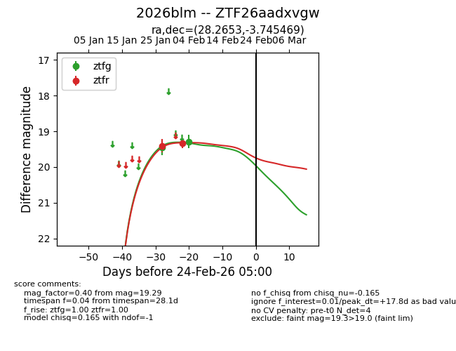
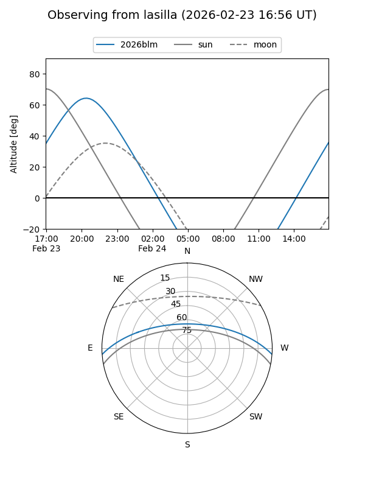
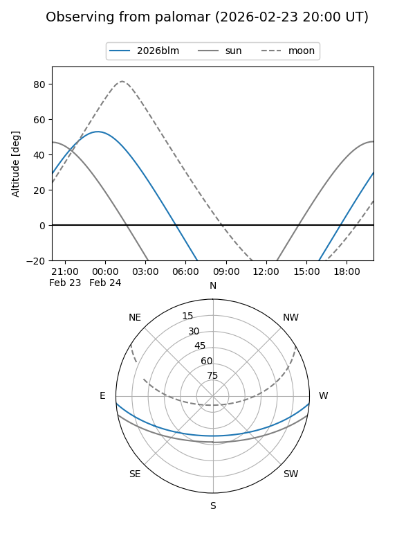

2026blm
Target 2026blm at 2026-01-27 06:06
Aliases and brokers:
FINK: link
Lasair: link
ALeRCE: link
TNS: link
YSE: link
alt names
ZTF26aadxvgw (ztf,fink_ztf)
2026blm (tns,yse)
Coordinates:
equatorial (ra, dec) = 28.2653,-3.74547
equatorial (HMS+DMS) = 01:53:03.67,-03:44:43.69
galactic (l, b) = (157.7944,-62.37034)
Flags:
Photometry:
last ztfr=19.41
1 ztfr detections
Lightcurve

Visibility


Additional plots